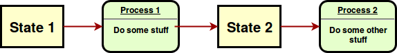

Going stateless in concurrent evolutionary
algorithms
JJ Merelo, @jjmerelo
University of Granada (Spain) + Mario García, Tecnológico de Tijuana, México
共に: concurrency: flowing together
Sequential processes communicate
Process writes to/read from channels
But they don't share state
Stateless⇒ 1 to 1 mapping input/output
For all functions.
State is processed, not mutated

Split code from data
Decouples state and computation
Processing in streams
You can always go stateless
Put all state into arguments
⇒ functionally equivalent
Evolutionary algorithms in Perl six
Concurrent, JIT-compiled, functional
But... evolutionary algorithms are not stateless
Who will de-state-ify them?
Perl 6 offers channel based concurrency
Go concurrent
Two levels: individual and population
Messages to channels
Start with functional equivalence
Add communication
New algorithm, new tuning parameters
Thank you very much
Questions?